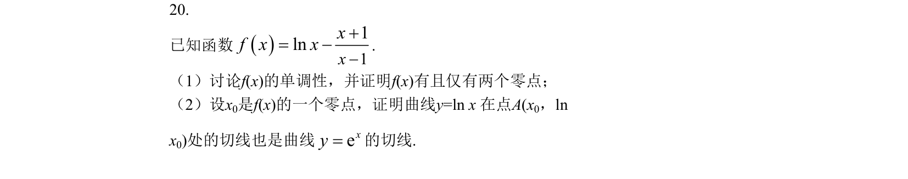
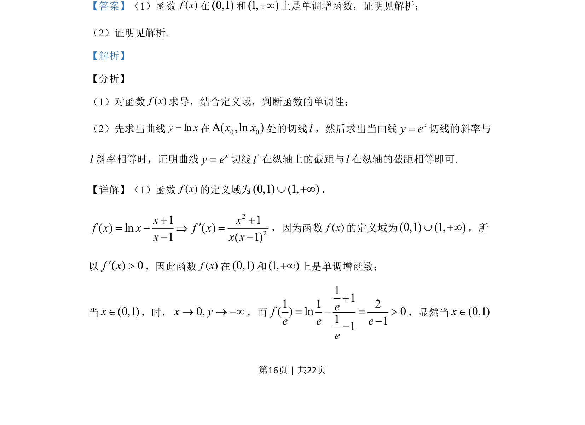

考点：导数 函数单调性 零点 切线

已知f(x)=lnx-(x+1)/(x-1)，讨论单调性并证明有且仅有两个零点，再证明零点处lnx曲线切线也是e^x的切线。

📄 原 PDF 第 16 页：
素材/真题/吉林/2008-2024·（吉林）数学高考真题/2019年高考数学试卷（理）（新课标Ⅱ）（解析卷）.pdf
20. 已知函数()11lnxf x xx−= −+. （1）讨论f(x)的单调性，并证明f(x)有且仅有两个零点； （2）设x0是f(x)的一个零点，证明曲线y=ln x 在点A(x0，ln x0)处的切线也是曲线exy=的切线.
【答案】（1）函数( )f x在(0,1)和(1, )+¥上是单调增函数，证明见解析； （2）证明见解析. 【解析】 【分析】 （1）对函数( )f x求导，结合定义域，判断函数的单调性； （2）先求出曲线lny x=在0 0A( ,ln )x x处的切线l，然后求出当曲线xy e=切线的斜率与 l斜率相等时，证明曲线xy e=切线'l在纵轴上的截距与l在纵轴的截距相等即可. 【详解】（1）函数( )f x的定义域为(0,1) (1, )È +¥， 221 1( ) ln ( )1 ( 1)x xf x x f xx x x+ +¢= − Þ =− − ，因为函数( )f x的定义域为(0,1) (1, )È +¥，所 以( ) 0f x¢>，因此函数( )f x在(0,1)和(1, )+¥上是单调增函数； 当(0,1)xÎ，时，0,x y® ® −¥，而 111 1 2( ) ln 0111efe e ee+= − = >−− ，显然当(0,1)xÎ 的